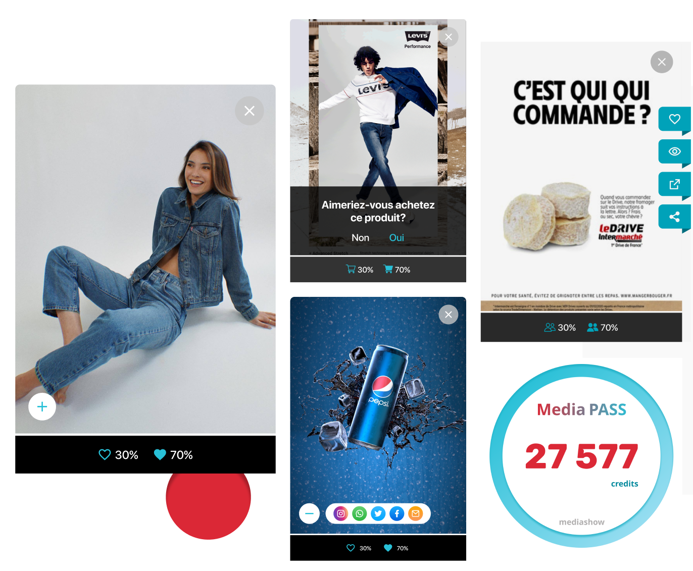

<div class="block" id="pass">
  

  <p class="text-block"><span class="titre">Le Media Pass</span>
    <br>
    
    Ce porte-monnaie virtuel enregistre des 
    « crédits média » pour chaque visiteur en fonction de 
    ses actions et considérations volontaires réalisées sur 
    les contenus des marques. Ses crédits lui donnent le 
    pouvoir de rémunérer les médias et plateformes de son choix. 
</div>
